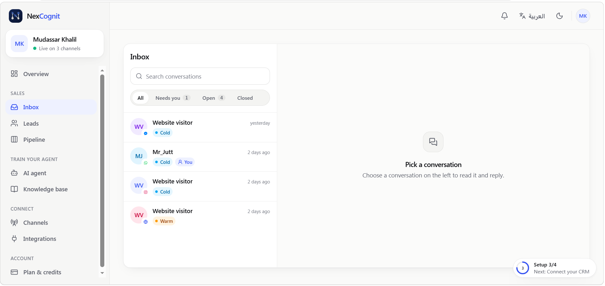
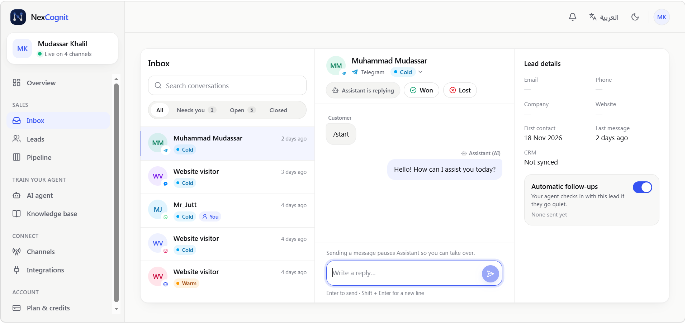

Inbox
The Inbox is where you read and reply to all customer conversations in one place. Messages from every connected channel, such as Website chat, WhatsApp, Messenger, and Instagram, appear here.
Inbox overview
The left side shows your list of conversations. When you select a conversation, the chat opens in the middle and the customer's details appear on the right.

Find a conversation
Use the Search conversations box at the top of the list to find a conversation quickly.
Use the tabs below the search box to filter the list:
- All: Every conversation.
- Needs you: Conversations waiting for a reply from your team.
- Open: Conversations that are still active.
- Closed: Conversations that are finished.
The number next to a tab shows how many conversations are in it.
What each conversation shows
- Name: The customer's name. If the name is not known yet, it shows as Website visitor.
- Channel icon: A small icon on the profile picture shows which channel the message came from.
- Lead temperature: A label such as Hot, Warm, Cold, or New shows how ready the customer is to buy.
- Time: When the last message arrived.
Read and reply
Click any conversation in the list. It opens in the middle of the screen, where you can read the full chat.

- Top of the chat: The customer's name, the channel they used, and their lead temperature. Click the small arrow next to the temperature to change it.
- Assistant is replying: Shows that your AI agent is answering this customer.
- Won / Lost: Mark the lead as won or lost when the deal is finished.
- Write a reply: Type a message and press Enter to send it. Press Shift + Enter for a new line. Sending a message pauses your agent so you can take over the chat.
Lead details
The right side shows details about the customer, such as email, phone, company, website, first contact, last message, and whether the lead is synced to your CRM.
Automatic follow-ups: When this switch is on, your agent checks in with the lead if they go quiet. Below the switch, you can see how many follow-ups have been sent.
Things to know
- Check the Needs you tab often so no customer is left waiting.
- All channels share one Inbox, so you do not need to open each app separately.
- The lead temperature label helps you decide which conversations to answer first.